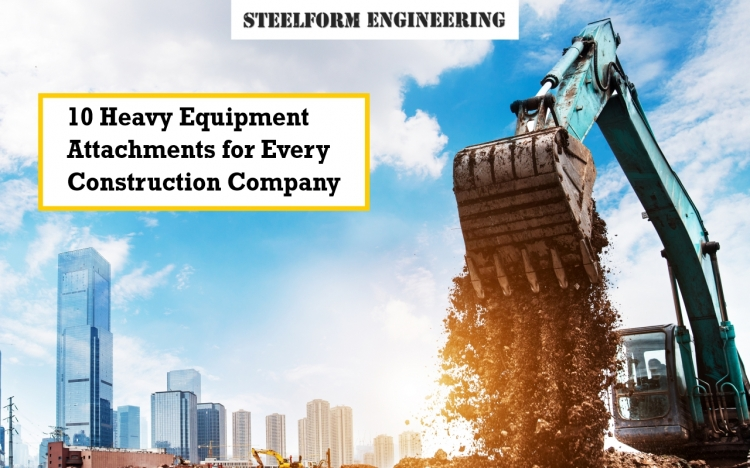

In today's competitive construction landscape, maximising efficiency and versatility are paramount. Heavy equipment attachments play a crucial role in enhancing the capabilities of your machinery, allowing you to tackle a wider range of tasks and complete projects faster. This blog post will delve into the top 10 must-have attachments for any construction company, including powerful hydraulic hammers for demolition and excavation, versatile grapples for handling a variety of materials, and robust rippers for breaking up hard ground. We'll also feature insights from industry experts like Steelform Engineering to provide valuable guidance on selecting and utilising the most effective attachments for your specific needs.
GP Excavator Buckets are the workhorses of the construction site. These versatile attachments are designed for a wide range of tasks, making them indispensable for any excavator operator.
What Are They?
GP buckets are the standard, general-purpose buckets used for digging, loading, and material handling. They are the most common type of excavator attachment.
Applications:
Hydraulic hammers are powerful attachments designed to break through tough materials like concrete, rock, and asphalt.
Purpose:
Applications:
Key Features:
Grapples are specialised attachments designed for efficiently handling a variety of materials. They are equipped with multiple tines or prongs that grasp and hold onto objects, making them ideal for lifting, sorting, and moving materials.
What Are Grapples?
Grapples are attachments with multiple tines or prongs that grip and hold onto materials.
Applications:
Rippers are powerful attachments designed to break up hard soil, rock, and frozen ground. They are essential for preparing the ground for excavation and other construction activities.
Functionality: Rippers feature a heavy-duty shank with a sharpened tip that penetrates and breaks up hard soil.
Applications:
Mulchers are specialised attachments designed to efficiently clear vegetation and underbrush. They are environmentally friendly alternatives to traditional land-clearing methods.
Purpose: To shred and pulverise vegetation, including trees, shrubs, and brush.
Applications:
Grader blades are essential attachments for achieving smooth and level surfaces.
Use Case: Levelling surfaces for roads, foundations, and landscaping projects.
Applications:
Augers are attachments designed for drilling holes in the ground.
Purpose: Drilling holes for posts, trees, foundations, and other applications.
Applications:
Compaction Wheels are essential for achieving proper soil compaction during construction projects.
Function: Compacts soil during trenching and backfilling operations.
Applications:
Tiltrotators are highly versatile attachments that significantly enhance the capabilities of excavators.
What Are They?
Tiltrotators allow the excavator arm to rotate 360 degrees and tilt at various angles.
Applications:
Quick couplers are essential for maximising the versatility and efficiency of your excavator.
Functionality: Enables rapid and easy attachment changes without leaving the cab.
Applications: Used to quickly switch between different attachments, such as buckets, hammers, and grapples, on a single job site.
Essential Feature: Ensures compatibility between the excavator and various attachments, allowing for seamless transitions between tasks.
In conclusion, investing in the right heavy equipment attachments is crucial for any construction company seeking to maximise efficiency, versatility, and profitability. From essential tools like GP excavator buckets and powerful hydraulic hammers to specialised attachments such as grapples, rippers, mulchers, and grader blades, the right selection can significantly impact project timelines and costs. By incorporating these attachments into their operations, construction companies can tackle a wider range of tasks, improve productivity, and enhance their overall competitiveness.
For high-quality and reliable construction equipment, including GP Excavator Buckets and other essential attachments, consider partnering with industry leaders like Steelform Engineering. Visit our website or contact us directly to explore our range of products and discuss your specific needs.